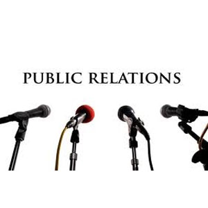

The Public Relations Major

Public relations (PR) is the practice of managing the spread of information between an individual or an organization and the public. Public relations may include an organization or individual gaining exposure to their audiences using topics of public interest and news items that do not require direct payment. The aim of public relations by a company often is to persuade the public, investors, partners, employees, and other stakeholders to maintain a certain point of view about it, its leadership, products, or of political decisions. Common activities include speaking at conferences, winning industry awards, working with the press, and employee communication
Careers for Public Relations majors
- Marketing Coordinator
- Copywriter
- Fundraiser
- Direct Marketing Spokesperson
- Media Buyer
- Investor Relations
- Account Executive
- Public Information Officer
- Employee Relations
- Production Coordinator
- Media Planner
- Special Events Coordinator
- Researcher
- Counselor
- Marketing Manager
- Art Director
- Media Relations
- Marketing Communications
- Freelance Writer
- Strategic Planner
- Multicultural Relations
- Government Affairs
- Sales Representative
Advertising | Broadcasting | Journalism | Public Relations |